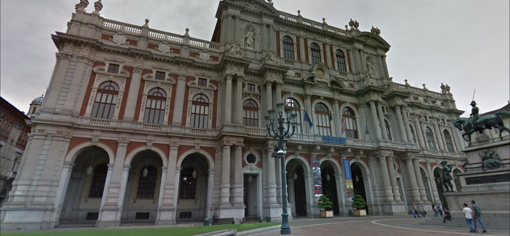

סיור לימודי בעקבות איחוד איטליה
תכנון מסע
חזרה לדף ראשישלום לכם תיירים ותלמידים יקרים שיטוסו ביחד איתנו , לסיור לימודי מעניין באיטליה בעקבות איחודה כדי להעמיק ולהתעניין יותר בנושא. המסע יהיה לאורך שלושה ימים כשכל יום יוקדש למוזיאון אחר והסיור יתרחש בערים שונות: מילאנו, אמיליה וטורינו.
מוזיאון הריזורגימנטו במילאנו
בהתחלת הסיור אנחנו ניסע למוזיאון הריזורגימנטו בעיר מילאנו מכיוון שהוא
מתאר את איחוד איטליה בצורה מוחשית וויזואלית.
כדי להגיע למוזיאון יש לרשום בתוכנת הניווט את הכתובת:"Via Borgonuovo, 23, 20121 Milano MI, איטליה"
מוזיאון הריסורגימנטו שנמצא בארמון הפאלאצו מוריגיה(באנגלית:Palazzo Moriggia) במילאנו שתוכנן בשנת 1775 על ידי ג'וזפה פיירמריני, המוזיאון אשר נוסד בשנת 1885, מאכלס אוסף של חפצים כגון הדפסים, רישומים, כלי נשק ויצירות אמנות הממחישים את ההיסטוריה של האיחוד האיטלקי החל מהקמפיין האיטלקי הראשון של נפוליאון בשנת 1796 ועד לכיבוש רומא במהלך איחוד איטליה ב 1870.
הפעילות במוזיאון תימשך במשך שעתיים עד שלוש שעות ואתם תספיקו בזמן הזה לראות את התערוכות של ההדפסים, הציורים וכל שאר החפצים ויצירות האמנות.
אחרי המוזיאון במילאנו אנחנו אנחנו ממליצים לכם לטייל במרכז העתיק של מילאנו עד הערב כי העיר אחת היפות ביותר, שקשורה לאיחוד איטליה מכייוון שהיא שבה התחילו מרידות של מהפכנים ומורדים לאיחוד של איטליה, כך שהם הצליחו לגרש את הצבא האוסטרי. ואין כמו אחרי מוזיאון שבו הלכתם ולמדתם על איחוד איטליה כל כך הרבה, ללכת להתפנק כי מגיע לכם אחרי כל הבילויי במוזיאון , בשביל זה נלך למסעדה בעלת אוכל לאומי שעוזר לאחדותה האתנית והתרבותית של איטליה, והוא הריזוטו , למסעדה במילאנו בשם "Risoelatte" בכתובת Via Manfredo Camperio, 6, 20123 Milano MI, Italy
מוזיאון הטריקולור ברג'יו אמיליה
בהיעד הבא שלנו בסיור הוא מוזיאון מאוד מעניין ששמו טריקולור שנמצא בעיר
רג'יו אמיליה, המוזיאון מתמקד בדגל איטליה.
כדי להגיע למוזיאון יש לרשום בתוכנת הניווט את הכתובת:"Piazza Antonio Casotti, 2, 42121 Reggio Emilia RE"
מוזיאון הטריקולור(Museum of the tricolour) שנמצא בעיר רג'יו אמיליה, הינו מוזיאון המתמקד בדגל איטליה והוא משמר שרידים, מסמכים ודגלי איטליה, אחרי הגעתו של נפוליאון בונפרטה ועד לנפילת נפוליאון, ודברים אחרים מתקופת האיחוד של איטליה. המוזיאון נפתח בשנת 2004 במטרה העיקרית לתעד את הקשר ההיסטורי והפוליטי בו נוצר דגל איטליה לכן הוא קשור ללאום האיטלקי וכך גם ליכולת של איטליה להתאחד, כשבמוזיאון יש תערוכות על השגת עצמאותה של איטליה ואיחודה.
במוזיאון אנחנו ממליצים להיות 3 שעות ולהתרשם מהשרידים של תקופות נפוליאון ומכל שאר התערוכות הנפלאות.
אחרי המוזיאון אנחנו ממליצים לטייל ברחובות העיר העתיקה בנוסף למוזיאון כי רחובות העיר העתיקה זה מראה מלבב. ואז ללכת למסעדה של המאכל הלאומי ביותר באיטליה שעוזר לאחדותה האתנית והתרבותית של איטליה שהיא הפיצה, ובישביל זה נלך לאחד המקומות הטובים שמכינים בהם פיצות בעיר והוא המסעדה "Pizzeria La Piola" בכתובת Via Mario Calderini, 5/b, 42121 Reggio Emilia RE, Italy.
המוזיאון הלאומי של ריזורגימנטו בטורינו

היעד השלישי והאחרון שלנו באיטליה בעקבות האחדות האיטלקית , הוא אחד
המוזיאונים החשובים ביותר באיטליה ולכן אנחנו ממש ממליצים להקדיש לו הרבה
זמן.
כדי להגיע למוזיאון יש לרשום בתוכנת הניווט את הכתובת:" P.za Carlo Alberto, 8, Via Accademia delle Scienze, 5, 10123 Torino
TO, Italy"
המוזיאון של ריזורגימנטו בטורינו הוא מוזיאון המציג את חלל התצוגה הגדול ביותר בתולדות המולדת האיטלקית, כשהוא המוזיאון החשוב והעתיק ביותר שמוקדש לאיחוד איטליה, בגלל עושרם של הייצוגים של האוספים במוזיאון. כשהמוזיאון הוא אחד היחידים שיש לו רשמית את התואר "לאומי" . המוזיאון ממוקם בתוך ארמון קריניאנו. המוזיאון עצמו מוקדש לאיחוד הפוליטי והמדיני של איטליה, ואת המוצגים שיש במוזיאון ניתן לייחס לתקופה היסטורית מאוד רחבה בין השנים 1706 שהיא השנה שבה קרה המצור על טורינו לשנת 1946 שבה קרתה הולדת הרפובליקה האיטלקית המוזיאון נוסד , בשנת 1878 לשם זיכרונו של של המלך הראשון של איטליה המאוחדת- ויטוריו עמנואל השני, בנוסף, התערוכות של המוזיאון עודכנו בשנת 1948 לרגל 100 שנה אחרי מלחמת העצמאות הראשונה, וגם בשנת 1961 במהלך חגיגות של 100 שנה לאיחודה של איטליה.
כמו שרשמנו, מוזיאון זה גדול ולכן דורש הרבה זמן, לכן אנחנו ממליצים לכם להיות בערך מ 3 עד 4 שעות שבהן נוכל בצורה נורמלית לצפות בפריטים והמוצגים היוקרתיים שנאספו להבנת איחודה של איטליה.
אחרי 4- 3 שעות מופלאות, אנו ממליצים לצאת החוצה וליהנות מטורינו היפיפיה שקשורה לאיחוד איטליה בגלל שבפרלמנט שבעיר קאבור טען שצריך לשפר את השיטות החקלאיות האיטלקיות , וחקלאות זה נושא מאוד חשוב במיוחד בשביל להקים מדינה מאוד גדולה כמו איטליה שצריך בשבילה הרבה מקורות מזון. ואם כבר מדברים על מקורות מזון אז אנחנו ממליצים ללכת למסעדה טעימה בטורינו שיש בה סוגי פסטות שזהו מאכל לאומי (אותו הדבר כמו פיצה) , ולמסעדה קוראים -"Pastificio Defilippis" בכתובת .Via Giuseppe Luigi Lagrange, 39, 10123 Torino TO Italy
חזרה לדף ראשי